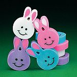
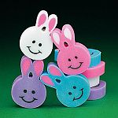
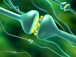
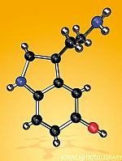

Años atrás, mientras daba mis primeros pasos en una nueva ciudad, asaltada por un olor detuve mi marcha. Era primavera en el noroeste estadounidense y la vida afloraba; hacía ya varios años que caminaba lejos de mi tierra, conociendo nuevos espacios; sin embargo, durante ese efímero momento me descubrí en aquel pupitre de primaria, en el colegio de monjas de mi infancia, y mi mano de niña se llevaba a la nariz la familiar goma de borrar en forma de conejo, para olerla nuevamente. Cerré los ojos y percibí aquel momento como real, parecía ser el mismo olor de aquella parte de mi vida décadas antes; al abrirlos y regresar a la ciudad por conocer, el agridulce estremecimiento de la nostalgia me envolvió por completo.
Al reanudar mi andar, pensamientos de serotonina merodeaban por mis neuronas; y esta vez no de forma literal.

Es curiosa la nostalgia. Al principio nos parecía una emoción negativa, típica de inmigrantes y de estudiantes viviendo lejos del hogar. Falta de sueño, ansiedad y depresión fueron algunos de los síntomas que la ubicaron dentro de los desórdenes psiquiátricos. Sin embargo, la neurología y la biología evolutiva la rescataron, descubriendo un lado positivo para la aparición de la nostalgia en los humanos (la nostalgia es una emoción difícil de estudiar en animales no humanos).
Más aún, se ha comprobado que todos la sentimos, no sólo los que están lejos del hogar: la nostalgia por el pasado nos acaricia por igual. “Esta emoción ocurre en todas las culturas y en las distintas edades del ser humano”, nos asegura el psicólogo de la Universidad de Southhampton, Constantine Sedikides.
Por otro lado, la nostalgia amplifica nuestra percepción de pertenencia, ayudándonos a contrarrestar los sentimientos de soledad, especialmente cuando estamos viejos y más aislados. “Nuestros experimentos muestran que los sujetos más fuertes y resistentes son aquellos que usan la nostalgia para vencer la soledad”, explica Xinyue Zhou, psicólogo de la universidad de Sun Yat-Sen en China, quien trabajó junto a Sedikides en experimentos similares.
La nostalgia es hermana de nuestros recuerdos y prima de las emociones. La unión de una memoria, despertada por un estímulo accidental y con una mezcla particular de emociones, tiene como resultado ese intenso sentimiento de añoranza. Por ello, para conocer cómo ocurre la nostalgia y otras emociones humanas, hay que comprender primero cómo el cerebro maneja los recuerdos. Durante mucho tiempo se pensó que el cerebro tenía un archivo para las memorias que servía de referencia para toda la red neuronal, de allí se sacaban los recuerdos cuando era necesario. Pero el mundo de la neurología actual nos muestra que el órgano gris y blanco no es tan organizado; al estudiarlo nos damos cuenta de que no parece estar muy seguro de lo que hace, es propenso a fallas, bastante conservador aunque creativo y ha desarrollado numerosas herramientas para adaptarse al cambio; aunque no lo hace fácilmente y muchas veces tiene que aprender lo que olvidó desde el principio. Hoy se piensa que no hay un archivo de nuestras memorias, más bien tres capas de redes neuronales especializadas, y que el proceso es mucho más desorganizado y espontáneo.
Lo que ocurre es lo siguiente; imaginemos un escenario común para todos: nos presentan a alguien y escuchamos su nombre por primera vez. En ese momento, una ‘burbujita’ con ese nombre surge de la interacción sináptica entre neuronas y esta sinapsis en particular se vuelve sensible a señales similares subsecuentes. Es decir, cuando escuches el nombre de esa persona otra vez, o lo veas de nuevo y digas su nombre, esa misma sinapsis es reforzada. Llega un momento en que esa sinapsis ha sido reforzada con tanta regularidad y por tanto tiempo, que se convierte en la sinapsis del nombre de tu mejor amigo. Pero ese nombre es un rastro en el cerebro, un circuito que una vez cimentado es seguido fácilmente por señales similares subsecuentes, si ese rastro no es reforzado se pierde y no se convierte en una memoria permanente o a largo plazo.
“Las memorias de eventos complejos constituyen patrones de rastros que se han formado a través de grandes áreas cerebrales. Una memoria en particular no es sacada de un archivo sino que es recreada en tiempo real por una compleja interacción neuronal que utiliza los circuitos existentes. De esa forma, la tarea de recordar es esencialmente un proceso multivalente y creativo y no una conexión directa de entrada y salida”, explica el neurobiólogo Carl Zimmer en “The Neurobiology of the Self” (La neurobiología del yo).
Por ello no es recomendable confiar apasionadamente en nuestras memorias pues tendemos a cambiarlas cada vez que recordamos. Y, efectivamente, los recuerdos relacionados con emociones intensas son los más difíciles de olvidar, adquiriendo una fortaleza impresionante en el cerebro. Para muchas personas, la persistencia de estas memorias puede convertirse en un impedimento para su bienestar. Por eso es esencial comprender los mecanismos que producen sentimientos emotivos en nosotros y para hacerlo debemos, no sólo descubrir las emociones que caracterizan a toda la especie, sino hurgar en sus orígenes, comenzando en los organismos más sencillos, como el gusano C. elegans y su relación directa con la serotonina.

El mundo de Elegans es escueto. Cuatro neurotransmisores controlan su conducta: octopamina, tiramina, dopamina y serotonina. Estos neurotransmisores actúan tanto en las neuronas como en los músculos regulando la puesta de huevos, el aprendizaje, la locomoción y el bombeo de la faringe. No necesita nada más, su vida no requiere de complejas decisiones. Ahora bien, cuando nos movemos al mundo de un insecto como el mime, Drosophila melanogaster, también conocido como mosca de la fruta, notaremos que la serotonina igualmente juega un papel relevante en el aprendizaje, en los ciclos de sueño, el crecimiento y hasta la agresión en estos insectos. De hecho, si buscamos en la sangre de los crustáceos y las aves, los ratones y las jirafas, los chimpancés y los humanos, encontraremos numerosas avenidas por donde transita este neurotransmisor, regulando un sinnúmero de funciones, desde el tracto digestivo, nuestra interacción social hasta qué tan felices podemos sentirnos en respuesta a interacciones con el medio.

Bajos niveles de serotonina en el cerebro han sido relacionados con un comportamiento antisocial y agresivo, un aumento promedio te hace más sociable y feliz. Este químico, junto a más de un centenar de neurotransmisores, controla gran parte de nuestro comportamiento y emociones y lo viene haciendo por miles de millones de años. Hoy sabemos que la depresión, el autismo, el desorden obsesivo compulsivo, el suicidio y muchas de las decisiones que tomamos diariamente están regulados en gran parte por la estabilidad de este químico en nuestro sistema.
Asimismo, cuando el médico responsabiliza a las hormonas del llanto excesivo de una joven embarazada, está incluyendo en su respuesta a la serotonina. De hecho, la progesterona y la serotonina son íntimas amigas y en momentos de embarazo o de cambios en los ovarios de la mujer como la premenopausia, ambas se alborotan, ocasionando impresionantes cambios de humor. Pero los humanos usamos la razón para persuadirnos de que podemos calmarlas. “Todo cambiará cuando nazca el bebé”, nos consolamos. Apagamos un poco el miedo a volar citando estadísticas: “estoy en mayor peligro yendo al trabajo en mi carro”, justificamos la traición de alguien a quien amamos con mansas excusas, “es el estrés”, en un intento fallido de amainar el sufrimiento; pero a veces no hay razón que nos calme.
Cuando comprendamos con exquisita precisión cómo maneja el cerebro las emociones, las memorias y otras experiencias, será posible desarrollar programas virtuales escapistas que ayuden a restaurar la estabilidad cerebral. Existen numerosas formas de entrenar al cerebro, pero primero debemos comprender con claridad certera cómo funciona. No sólo se trata de estabilizar los químicos con más químicos; hoy sabemos que es posible establecer cambios en los genes y las neuronas a través de la experiencia, y nada mejor que el mundo virtual para elaborar complejas simulaciones centradas en programas personalizados para modificar la biología y subsecuentemente la conducta.
Estos escenarios también podrían beneficiar a millones de ancianos solitarios, proveyéndolos con herramientas efectivas para manipular a su favor los sentimientos de nostalgia. Asimismo, nos ayudarían a ejercitar la razón ante conflictos emotivos y así conseguir el resultado deseado mediante conductas acertadas y decisiones bien tomadas. Pensar antes de actuar es buen consejo, para eso evolucionamos la corteza para controlar a la arrebatadora serotonina y quitarle un poco el poder que tiene sobre nosotros; algo que el escueto elegans nunca podrá hacer.
Risas y sonrisas, asco, miedo, rabia

La serotonina y el suicidio
Por lo general, el cerebro humano necesita un motivo para expresar una emoción. Al no observar un motivo aparente, asumimos que algo anda mal en el interior del animal. Es vital que notemos estas conductas anómalas porque nuestro bienestar depende de que los demás se comporten de una forma más o menos predecible; cuando no lo hacen, cosas impresionantes ocurren, tanto en el espectro positivo como en el negativo.
“Podemos estudiar las emociones desde el punto de vista somático y conductual, es posible medir, por ejemplo, la fisiología del animal cuando se enfrenta a una situación de estrés. Sin embargo, sólo el humano puede transmitir su experiencia subjetiva. Es el mayor obstáculo en el estudio de las emociones en animales no humanos. No obstante, conocer las emociones que priman en toda la especie, cierra un poco más las posibilidades y nos apunta dónde comenzar a buscar”, expresa Marian Stamp Dawkins, profesora de conducta animal en la Universidad de Oxford.
Uno de estos estudios se llevó a cabo entre una muestra de británicos y otra de los Himba, un pueblo seminómada en Namibia que vive casi completamente aislado de las influencias culturales del resto del mundo. La investigación, realizada en el Colegio Universitario de Londres, mostraba a los sujetos historias basadas en una emoción en particular, al final, las personas escuchaban dos sonidos emotivos, como la risa y el llanto, uno estaba relacionado con la historia el otro no, ellos debían identificar el correcto. La risa, revelaron los resultados, es universal. De hecho, estudios diversos han descubierto que algunos animales no humanos reaccionan a las cosquillas y los humanos en todas las culturas reaccionamos a las cosquillas con risa o conductas que denotan placer y felicidad.

El miedo también es universal, así como el asco y la rabia; las sonrisas son conocidas a través de toda la especie. “Pensamos que las sonrisas y la risa son dos tipos de señales distintas; las sonrisas funcionan como una señal positiva de intención social mientras que la risa debe ser una señal más específica que tiene su origen en el juego”, explica la profesora Sophie Scott de dicha universidad y autora principal del estudio. No obstante, otros sonidos no fueron compartidos por estas dos distintas culturas. Los sonidos de placer, de logro y satisfacción no fueron reconocidos entre ellos.
Conocer cuáles emociones son compartidas por culturas tan diferentes es vital a la hora de comprender la función que juegan las emociones en nuestras vidas, para qué evolucionaron y cuáles mecanismos usan para que consigamos nuestras metas. Y una de las acciones más contrarias a la obtención de metas es el abismo emocional que nos lleva al suicidio.
Los pensamientos suicidas y el suicidio también aparecen en todos los países. El estudio más grande al respecto fue llevado a cabo en el 2008 por La Organización Mundial de la Salud junto a investigadores de la Universidad de Harvard. La investigación incluyó 17 países: Nigeria, Colombia, Nueva Zelanda, China, Francia, Líbano, Estados Unidos, Japón, Sudáfrica, México, Israel, Ucrania, España, Países Bajos, Italia, Alemania y Bélgica; y abarcó 84,850 adultos de todas las clases económicas.
Estos estudios son vitales no sólo por ser el suicidio la causa principal de muerte en el Homo sapiens sino porque el éxito de un suicida significa el total rechazo al instinto más fuerte en el animal: vivir.
La investigación, afortunadamente, ya comienza a identificar las pistas físicas del suicidio. Victoria Arango, del Instituto Psiquiátrico del Estado de Nueva York junto a J. John Mann del Hospital Prebisteriano de Nueva York, han estado desenmarañando la neuropatología del suicidio. En 25 congeladoras en sus laboratorios, 200 cerebros suicidas muestran similitudes y patrones. “Examinamos la anatomía neuronal y alteraciones genéticas o químicas que puedan ser únicas para este grupo de cerebros. Además, cada cerebro viene acompañado por una ‘autopsia psicológica’, un compendio de entrevistas con los familiares y amigos íntimos del sujeto para conocer mejor su conducta antes y durante sus últimos momentos”, explica Arango.
Los investigadores han descubierto cambios tanto anatómicos como químicos en dos regiones de los cerebros suicidas: la corteza orbital prefrontal, que se encuentra justo sobre los ojos, y en el núcleo dorsal de rafé en el tallo encefálico. Estas alteraciones dejan algo muy claro, las personas que se suicidan padecen de una reducida habilidad para hacer y usar serotonina.
“La serotonina es clave. Sabemos que las personas impulsivas y las que sufren de depresión tienen muy bajos niveles o ausencia completa de serotonina en sus cerebros. Este neurotransmisor es manufacturado en el dorsal de rafé y desde allí transportado hacia la corteza orbital prefrontal. En los cerebros examinados de suicidas, el rafé envía niveles muy bajos de serotonina hacia la corteza.
También han descubierto anomalías en la anatomía cerebral. Por ejemplo, en una pequeña zona de la corteza orbital prefrontal había menos neuronas que en el cerebro promedio, el número de transportadores que se encarga de absorber y llevar y traer la serotonina de un lugar a otro era mucho más reducido en suicidas.
“Es interesante ver cómo el cerebro del suicida intentaba por todos los medios de devolver un poco de tranquilidad al animal produciendo más serotonina o intentando conectar a más neuronas con el poco neurotransmisor que producía. Observamos que el núcleo dorsal de rafé de los suicidas contenían más cantidad del sintetizador de la serotonina, en un intento desesperado de extraer más”, explica Arango.
No es simple melancolía ni un intenso y nostálgico episodio, es una inestabilidad severa causada por nuestra biología que destroza a millones de familias por todo el mundo. Sin embargo, la irregularidad de la anciana serotonina tiene un efecto indudable y gradual en la producción de estos problemas; conseguir repararlos será un avance magistral para la neurología y también, por supuesto, para el bienestar general de nuestra nostálgica especie.
Volver al índice de la Lupa Herética
© 2008-2023 Glenys Álvarez y Sin Dioses. Prohibida la reproducción con fines comerciales.
Comentarios
Comments powered by Disqus